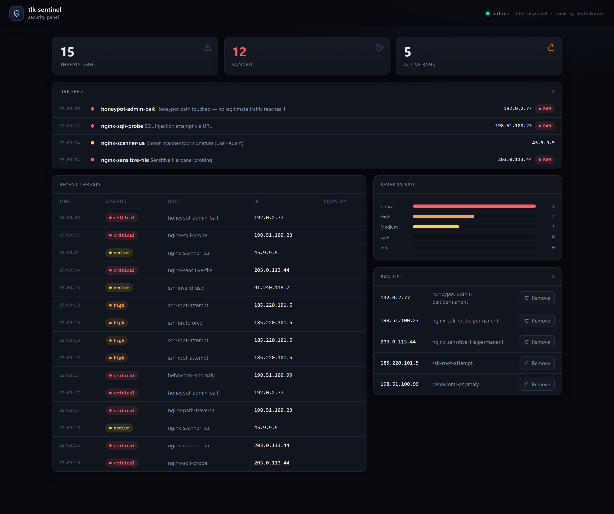

Brute force, invalid users, root logins
Threshold windows per IP.
SSH · nginx · Next.js middleware · reputation · behavioural scoring · live panel
Most small fleets run fail2ban for SSH, nothing for the application, and hear about an incident from a customer. tlk-sentinel reads your server logs and runs inside your app, so a scanner probing /.env and the same IP hammering your login are one story, not two.
The community build watches, scores and reports. It never bans.
It runs the public profile, and the firewall responder starts in dry-run, so a fresh clone touches nothing on your host until you turn both on deliberately. Watch it for a day, confirm the decisions look right, then set TLK_FW_DRYRUN=0.
01 — Try to sneak one past it
Requests are decoded (percent, double-percent and +) before matching, so a payload wrapped in %25 is caught exactly like its plain form. This box runs the same decoder and the same public nginx and web rules, in your browser.
02 — One agent
03 — What it catches
Threshold windows per IP.
Regex rules on normalized requests: .env, wp-admin, phpmyadmin and friends.
User-Agent signatures.
A behavioural score from request rate, path diversity, User-Agent churn and the 4xx ratio.
Offline CIDR reputation escalates the threat to critical.
A sha256 baseline, re-checked on a timer.
04 — Two builds, one codebase
public · community
self · internal
npm run dist:public strips the internal profile, private rules and signing key, scans the output for secrets and asserts the public default is still passive. If any check fails the build is rejected, so an enforcing default can never reach a release by accident.
05 — Live panel
Bound to 127.0.0.1:8787. On any other interface it refuses to bind without TLK_PANEL_TOKEN, and says so. Every write endpoint validates its input: an IP that is not an IP never reaches nft.

06 — Inside your app
Verdicts carry hardened response headers (nosniff, DENY, HSTS, a locked-down Permissions-Policy), so you can apply them to allowed responses as well.
import { WebGuard } from "@tlk-sentinel/web";
const guard = new WebGuard({
profilePath: "profiles/public.json",
rulesPublicDir: "rules/public",
trustedProxy: true,
});
export async function middleware(request: Request) {
const verdict = await guard.inspect(request, { trustProxy: true });
if (verdict.action === "block") {
return new Response("blocked", { status: verdict.status, headers: verdict.headers });
}
}Ban thresholds and escalation, profile gating, reputation and country tables, anomaly cooldown, log tailing across truncation and logrotate, integrity baselines, the SQLite store and firewall input validation. Four integration tests boot the real agent against a live log file. Two more assert that a build with the attribution removed fails its signature check and refuses to enforce. CI runs on Linux and Windows, Node 22 and 24.
07 — Install
The built-in SQLite is why the version matters. Read the threat model before deploying: what it does not catch, and the four ways the tool itself can be turned against you.
git clone https://github.com/Talkdedsec/tlk-sentinel /opt/tlk-sentinel
cd /opt/tlk-sentinel
npm install
npm run build
cp .env.example .env
npm run agentsudo cp deploy/tlk-sentinel.service /etc/systemd/system/
sudo systemctl enable --now tlk-sentinel08 — Licence, the short version
The LICENSE governs; this is a summary. Anything in the right-hand column can be bought: talkdedsec@proton.me